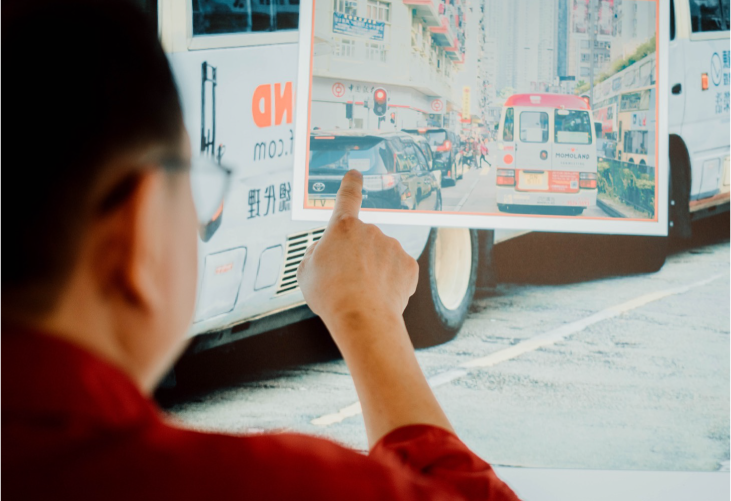
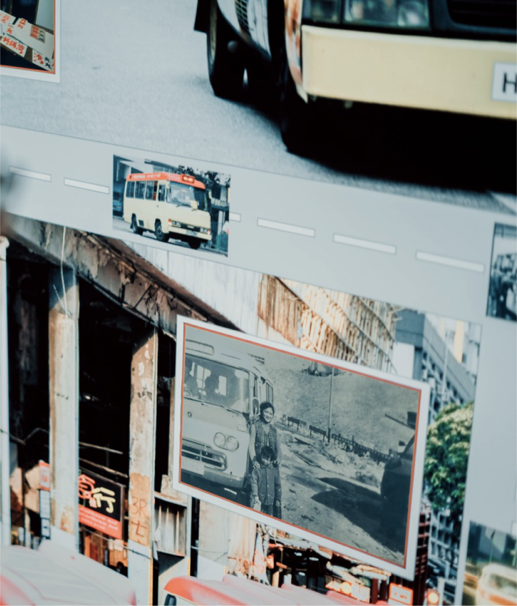

課程簡介
手寫小巴牌的意義除了是集體回憶和玩味潮流外，更是引領和提醒我們在人生路上前進的座右銘，透過唯一一個官方小巴牌製作網上課程，大家都可以勾劃出屬於自己人生故事的字句，將精神注入獨一無二的手寫小巴牌當中，在人生快樂或迷失的時候都可以陪伴我們左右。
在課程中，麥師傅會從小巴牌背後的歷史和理念開始，再帶領學員從不同角度學習小巴牌招牌字體，分享美學和手藝技巧。最後更會用上麥師傅為大家調製好的墨水和製作工具，親自一筆一劃教導大家在小巴牌寫上屬於自己的字句，引領大家輕鬆學懂DIY製作一份充滿意義的「手寫溫暖」小巴牌，揮筆延續香港故事！

在課程中，麥師傅會從小巴牌背後的歷史和理念開始，再帶領學員從不同角度學習小巴牌招牌字體，分享美學和手藝技巧。最後更會用上麥師傅為大家調製好的墨水和製作工具，親自一筆一劃教導大家在小巴牌寫上屬於自己的字句，引領大家輕鬆學懂DIY製作一份充滿意義的「手寫溫暖」小巴牌，揮筆延續香港故事！
